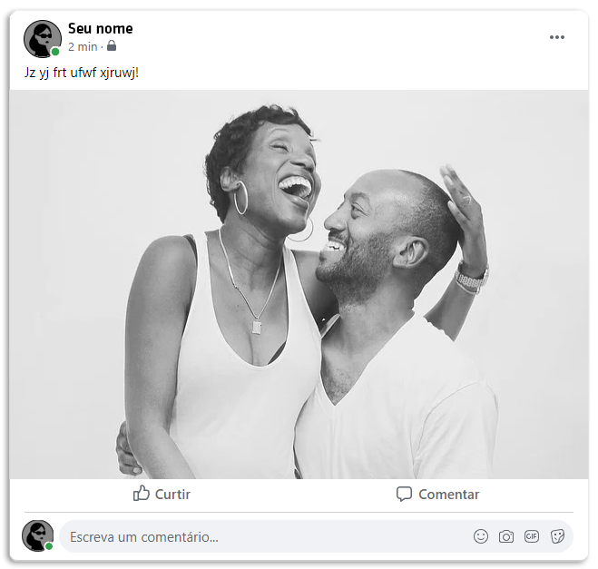

Da esquerda para a direita, vemos: o busto do Imperador Júlio César; as capas dos jornais londrinos "The Standard" e "The Times" no século XIX; uma fotografia da Rainha Vitória em 1887; a roda de decifração da Cifra de César; a capa do "The Ladies' Book of Etiquette” e foto de um casal inglês do século XIX.
O que era a Coluna da Agonia?
A Coluna da Agonia era uma seção do jornal para anúncios pessoais criada pelo jornal The Times (Londres) durante a era Vitoriana. A era Vitoriana foi o período do reinado da rainha Vitória, no Reino Unido. Compreendida de junho de 1838 a janeiro de 1901 (meados do século XIX), esta era foi marcada por rígidos costumes e moralismo social e sexual. Nessa época, por exemplo, não era aconselhável a comunicação por carta entre namorados, por isso os amantes se comunicavam por meio da Coluna da Agonia no jornal, usando apelidos, abreviações e, muitas vezes, criptografia. Uma das formas de criptografia utilizada foi a Cifra de César.
“É aconselhável a uma mulher que evite se corresponder com cavalheiros por cartas, principalmente se você é jovem. Ainda sim, se for um amigo de longa data e seus pais ou marido permitirem, é prudente que não se recuse a enviar-lhe uma resposta. Porém escreva a carta como se ela fosse impressa nos jornais, de modo que não lhe cause aborrecimentos. Se for um amigo muito próximo, tome cuidado com suas expressões para que não se tornem veementes e evite assuntos confidenciais. Quando ele começa a insistir em perguntar sobre assuntos particulares, é hora de parar de se corresponder com ele.”
"The Ladies' Book of Etiquette”
(O livro de etiqueta para damas), Florence Hartley (1860)
O que é a cifra de César?
Um tipo de cifra de substituição na qual cada letra de um texto a ser criptografado é substituída por outra letra, presente no alfabeto porém deslocada um certo número de posições. Isso significa que para ser possível criptografar uma mensagem pela Cifra de César, você deve escolher um número de deslocamento do alfabeto: por exemplo, se você escolher o deslocamento 3, todas as letras “A” da sua mensagem vão virar “D”, os “B” vão virar “E”, os “C” vão virar “F” e assim por diante.
O desafio aqui é criar uma Coluna da Agonia moderna!
Primeiro, você vai escrever uma mensagem para alguém próximo de você, pode ser para um amigue, alguém da família ou para um crush, criptografá-la e colocar na sua timeline do Twitter ou do Facebook. Depois, você vai dar a senha para descriptografar (e o link desta página) para quem você quiser que saiba qual é a mensagem, assim ninguém além de vocês vai saber o que está escrito.
Esse post contém a mensagem "Eu te amo para sempre!" criptografada com um deslocamento 31.